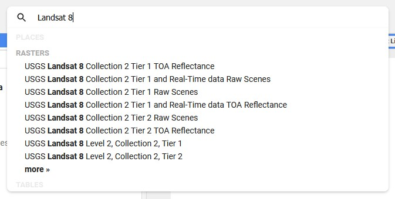
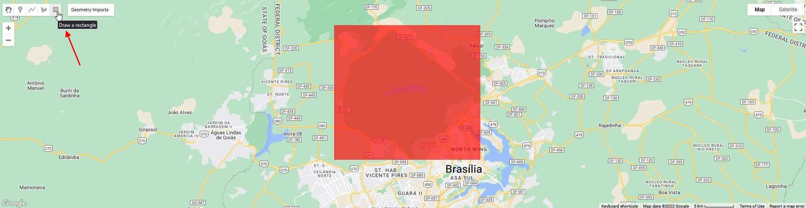
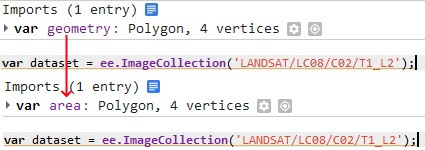
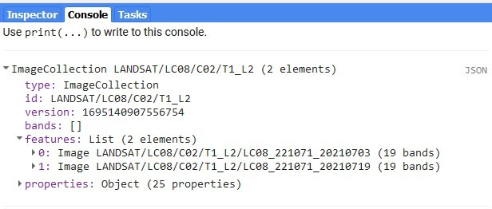
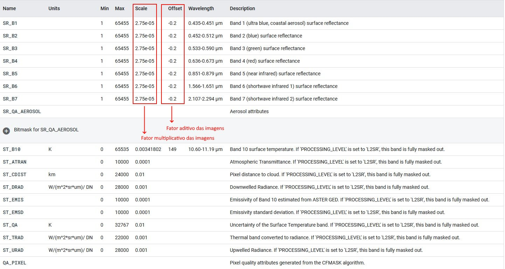

Definição da coleção e filtros básicos
Consultando o catálogo de imagens
O primeiro passo para trabalhar com a plataforma Earth Engine é a definição de uma (ou mais) coleção de interesse. Uma lista completa de todas as coleções disponíveis na plataforma Earth Engine está disponível no link https://developers.google.com/earth-engine/datasets/catalog. Também estão disponíveis catálogos específicos para imagens Landsat, MODIS e Sentinel. Você também pode utilizar a barra de busca acima do editor de código para buscar coleções de interesse:

Definindo a coleção no código
Podemos então definir nossa coleção através da função ee.ImageCollection que aceita como argumento o código referente à coleção de interesse. O exemplo a seguir mostra a definição da coleção utilizando imagens Landsat 8 corrigidas com valores de reflectância da superfície terrestre, referenciada pelo código 'LANDSAT/LC08/C02/T2_L2'. Link para a coleção.
var landsat = ee.ImageCollection('LANDSAT/LC08/C02/T1_L2');Por utilizar a linguagem de programação javascript, a definição de novas variáveis ou objetos na plataforma Earth Engine sempre se precederá do comando var:
// Exemplo
var a = 2;
var b = 3;
var c = a + b;
print(c)Filtro temporal e espacial
Certamente não há necessidade de utilizar todas as imagens na coleção, portanto é importante definir uma faixa temporal e uma região de interesse. Utilize a ferramenta de retângulo no painel do mapa e escolha uma área de interesse. Neste caso delimitou-se a região do Parque Nacional de Brasília:

Você pode esconder a geometria no painel do mapa e ela continuará funcionando nas funções.
Note que isto criou uma geometria nova no painel de edição de código chamada “geometry”. Você pode renomear esta geometria clicando no seu nome:

Agora podemos filtrar a coleção com base na região definida utilizando a função filterBounds que tem como argumento a área limite:
var landsat = ee.ImageCollection('LANDSAT/LC08/C02/T1_L2').filterBounds(area)Em seguida, podemos filtrar a coleção por faixa temporal usando a função filterDate que tem como argumentos a data inicial e a data final. Como exemplo, vamos escolher imagens apenas no mês de julho de 2023.
var landsat = ee.ImageCollection('LANDSAT/LC08/C02/T1_L2').filterBounds(area).filterDate("2021-07-01", "2021-07-31");
print(landsat)Ao pressionar o botão Run utilizando o código anterior, você poderá ver os detalhes da coleção no console. Observe que a coleção agora contem somente 2 imagens:

Na maioria das vezes você verá o código distribuído verticalmente:
var landsat = ee.ImageCollection('LANDSAT/LC08/C02/T1_L2')
.filterBounds(area)
.filterDate("2021-07-01", "2021-07-31");
print(landsat)O código é essencialmente o mesmo, porém muitos optam pela distribuição vertical por questão de legibilidade.
Note que funções são aplicadas de maneira subsequente utilizando o ponto (.), que é o modo como as funções são concatenadas uma atrás da outra (se o objeto gerado permitir a aplicação da função). Por exemplo, o código:
ee.ImageCollection('LANDSAT/LC08/C02/T1_L2').filterBounds(area)pode ser lido como “acesse o objeto ee (a base Earth Engine), aplique a função ImageCollection com o argumento 'LANDSAT/LC08/C02/T1_L2' e em seguida aplique a função FilterBounds com o argumento area”.
Consultando metadados das coleções
Antes de continuar, é importante demonstrar como lidar com os detalhes específicos das coleções disponíveis na plataforma. Continuando com imagens Landsat 8 como exemplo, acesse o link da coleção e observe o painel logo abaixo do cabeçalho. Este painel contém informações importantes sobre a aquisição, pré-processamento e detalhes sobre o formato das imagens. A aba Description, por exemplo, contém as informações gerais sobre a coleção.
A aba Bands descreve as bandas em detalhes, incluindo seus nomes (importante para selecionar bandas específicas). Esta aba é extremamente importante para a visualização e o processamento das imagens. Para economizar espaço de armazenamento, as imagens na plataforma geralmente são salvas em formatos contendo somente números inteiros (Int) e portanto passam por um pré-processamento para ajustar os valores. As bandas 1 a 7 das imagens Landsat 8, por exemplo, tem seus valores entre 1 e 65455 (Int16).

Para transformar estes valores para valores reais de reflectância, precisamos multiplicar as imagens pelo valor da coluna Scale e adicionar o valor da coluna Offset. Neste caso, portanto:
\[ Valor Real = Valor \times Scale + Offset \] Note que no caso das bandas termais estes valores são diferentes e que nem sempre o valor de Offset existe. É importante consultar esta aba antes de processar a coleção de interesse.
A aba Image Properties deste painel contem propriedades importantes especificas para cada imagem em uma coleção tal como valores de Path e Row, nível de processamento, etc. A propriedade CLOUD_COVER, por exemplo, descreve a porcentagem de cobertura de nuvens observada em cada imagem, permitindo filtrar uma coleção para conter somente imagens com baixa presença de nuvens. Veremos como fazer isto em tópicos intermediários.